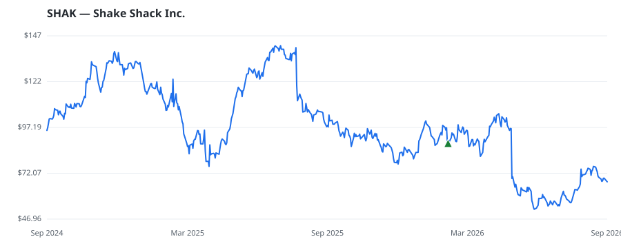

bullish · bearish · n/a — dots: price>SMA10 · SMA10>SMA50 · SMA50>SMA200 · up>down volume (20d)
Consumer Services · mid cap
Members who bought SHAK earned a dollar-weighted -21.3% from their disclosure dates, versus +13.0% for the S&P 500 over the same holding windows (-34.3% alpha).

▲ green = a disclosed purchase · ▼ red = a disclosed sale (plotted on disclosure date)
Shake Shack Inc is a roadside burger stand. It serves a classic American menu of premium burgers, hot dogs, crispy chicken, frozen custard, crinkle-cut fries, shakes, beer, wine, and more. The company's burgers are made with a whole-muscle blend of all-natural, hormone and antibiotic-free Angus beef, ground fresh daily, cooked to order, and served on a non-genetically modified organism (GMO) potato bun. Its menu focuses on food and beverages, crafted from a range of classic American foods. The company serves draft Root Beer, seasonal freshly-squeezed lemonade, organic fresh-brewed iced tea, co RETAIL-EATING & DRINKING PLACES · website
| Revenue | $1.4B | Net income | $49.7M |
|---|---|---|---|
| Operating income | $62.5M | Diluted EPS | $1.09 |
| Assets | $1.9B | Equity | $553.7M |
| Member | Chamber | Out-performer | Disclosed buys $ | Return on buys |
|---|---|---|---|---|
| Gilbert Cisneros | house | — | $8K | -21.3% |
Disclosed $ figures are bracket midpoints — filings report ranges (e.g. $1,001–$15,000), not exact amounts.
🛒 Newly buying: Hedeker Wealth, LLC (+10%, 0.5% of book) · Kazazian Asset Management, LLC (+4%, 0.2% of book) · Generali Investments Towarzystwo Funduszy Inwestycyjnych (+12%, 0.0% of book)
| Fund | Fund alpha vs SPY | Position | % of book |
|---|---|---|---|
| Hedeker Wealth, LLC | +10% | $3M | 0.5% |
| Future Fund LLC | +4% | $1M | 0.3% |
| Kazazian Asset Management, LLC | +4% | $0M | 0.2% |
| Generali Investments Towarzystwo Funduszy Inwestycyjnych | +12% | $0M | 0.0% |
Hedge data: SEC EDGAR 13F · ranked funds beat SPY in >50% of their quarters · fund alpha = mirror-portfolio return minus SPY.